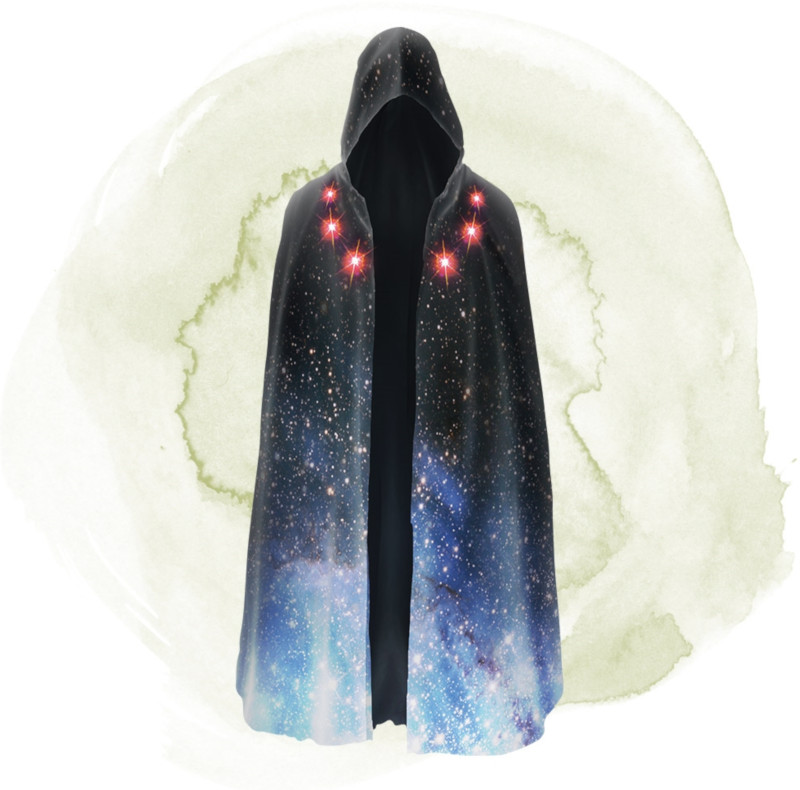

Robe aux étoiles
[ Robe of Stars ]
Objet merveilleux, très rare (nécessite un lien)
Cette robe noire ou bleue foncée est brodée de petites étoiles blanches ou argentées. Vous gagnez un bonus de +1 aux jets de sauvegarde tant que vous êtes équipé de cette robe. Six étoiles, situées sur la robe au niveau du torse, sont particulièrement larges. Tant que vous êtes équipé de cette robe, vous pouvez utiliser une action pour prélever l'une de ces étoiles et l'utiliser pour lancer un sort de projectile magique (équivalent à un emplacement de sort de niveau 5). Chaque jour, au crépuscule, 1d6 étoiles prélevées réapparaissent sur la robe.
Tant que vous êtes équipé de cette robe, vous pouvez utiliser une action pour entrer dans le plan Astral avec tout ce que vous portez et transportez. Vous y restez jusqu'à ce que vous utilisiez une action pour retourner dans votre plan de départ. Vous réapparaissez dans le dernier endroit que vous avez quitté, ou si cet espace est occupé, dans l'espace inoccupé le plus proche.
Tant que vous êtes équipé de cette robe, vous pouvez utiliser une action pour entrer dans le plan Astral avec tout ce que vous portez et transportez. Vous y restez jusqu'à ce que vous utilisiez une action pour retourner dans votre plan de départ. Vous réapparaissez dans le dernier endroit que vous avez quitté, ou si cet espace est occupé, dans l'espace inoccupé le plus proche.
Dungeon Master´s Guide (SRD)
